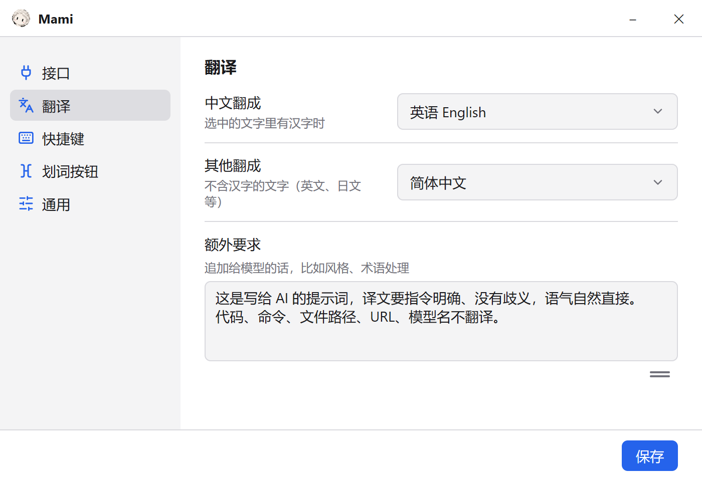

Translate where you type.
Select text in any input box and a small button appears. Click it for the translation, or press Alt T to replace the text in place. Mami is a Windows tray app that uses the model and API key you already have.
这是写给 AI 的提示词：请逐条检查日志，不要直接改代码。
中文 → English
Select the text above, or click it.
Built to stay out of the way
- Input boxes only
- Web pages and documents are left alone. Before showing anything, Mami asks Windows whether the focus is an editable field.
- Keeps your selection
- The button and the card never take focus, and your clipboard is put back after every translation.
- Safe in terminals
- In Windows Terminal Mami sends no keystrokes, so the program you are running never gets a surprise Ctrl+C.
- Your model, your key
- Any OpenAI-compatible endpoint. Tencent Hy-MT2 and bilibili Index-Translate get prompt formats of their own.
Make it yours
Light and dark themes, nine interface languages, twenty target languages, and extra instructions for style and terminology.

Get started
- Download the installer from the releases page and run it. Mami opens its settings the first time.
- It starts on bilibili's free endpoint, which needs no key. For daily use, pick one of the endpoints below and paste your key.
- Select text in any input box. Press Alt T to translate and replace, or Alt Shift T to only see the card.
| Provider | Base URL | Model | Notes |
|---|---|---|---|
| Tencent TokenHub | https://tokenhub.tencentmaas.com/v1 | hy-mt2-pro | Paid, stable, about 1 s. |
| OpenRouter | https://openrouter.ai/api/v1 | tencent/hy-mt2-30b-a3b | Same model family, pay as you go. |
| bilibili (free) | https://index-translate.bilibili.com/v1 | Index-Translate-35B-A3B | No key. Can be flaky at peak hours. |